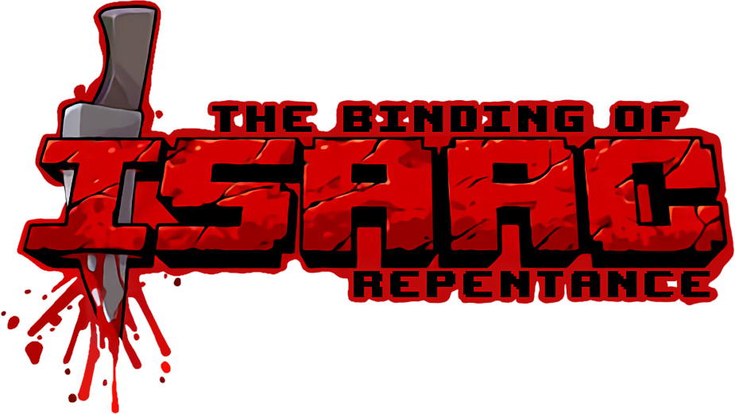
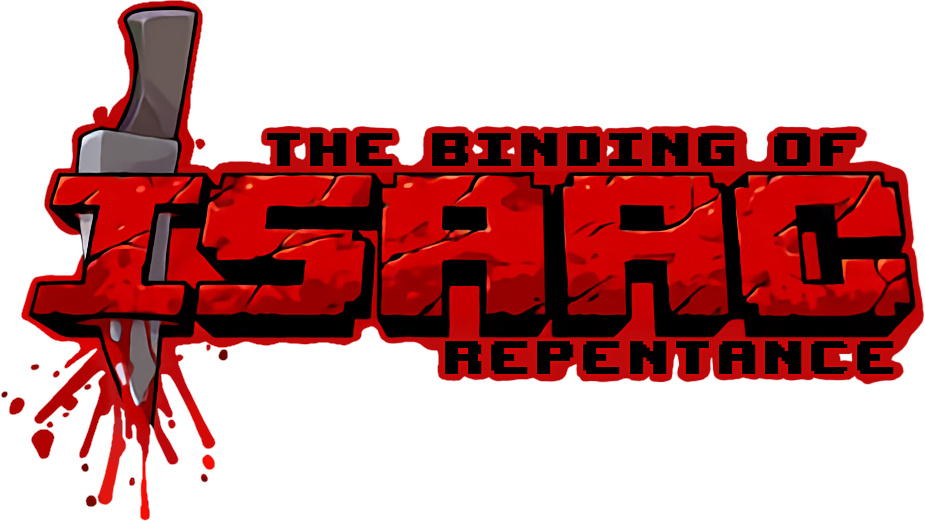

Hi, I'm Luca Salviani! I was born in the suburbs of Buenos Aires, Argentina, specifically in Lomas de Zamora. For the past few years, I've been living in the city's capital, at Palermo. I'm 24 years old and currently studying Systems Engineering at UTN FRBA — the greatest university of all time (in my humble opinion). Now that the basics are covered, let me tell you a bit more about myself. I'm a strange mix of things: a bit of a nerd, but I also love working out and going out with friends. I consider myself mostly introverted, but sometimes I surprise myself by being quite the extrovert. Defining myself feels tricky, so instead, I'll share what I think best represents me — my hobbies, friends, and family.
I have a lot of interests and can get pretty intense about them. I tend to dive deep into things I love, though I can switch passions from time to time, only to return to them later. Some of my longer-lasting passions are:
 

Family is a big part of my life. My parents divorced a while back, so I like to say I have two families. My mom is called Valeria, she is a Plastic artist, i think of her as strong and chic, she is married to Claudio, who has two kids, Mauro and Germán — I consider them my brothers although they are not from blood.
My dad, is called Luciano he is an Entrepreneur/carpenter i consider him a very creative chill guy with a big determination,he is married to Natalia, who has a daughter, Agostina, whom I also see as my sister, although not blood related.
Then there's my sister, Gina, who I love very much, though she can be quite annoying sometimes (as younger siblings tend to be), we are blood related and she is the daughter of both my parents, she is studying Illustration i see her as an explosive but caring artist.

I also have a "brother in soul" — Agustín. We've been best friends for over 10 years! We love hanging out, drinking mate at the park, cooking pizza, playing video games (currently binging Resident Evil), and sharing a good beer now and then.
Recently, someone special came into my life. She's an exchange student from New York, and we've been dating for a few months now. She's lovely, and I'm excited to see where this adventure takes us!
Thanks for Stopping By :)
Of course, it's hard to sum up everything about myself in a blog post, but I hope this gives you a good glimpse into who I am, what my interests are and where i come from. Thanks for reading, i really appreciate you taking the time to know me a little bit better, and I wish you success and happiness on your own fantastical journey!
Love Luca ;)